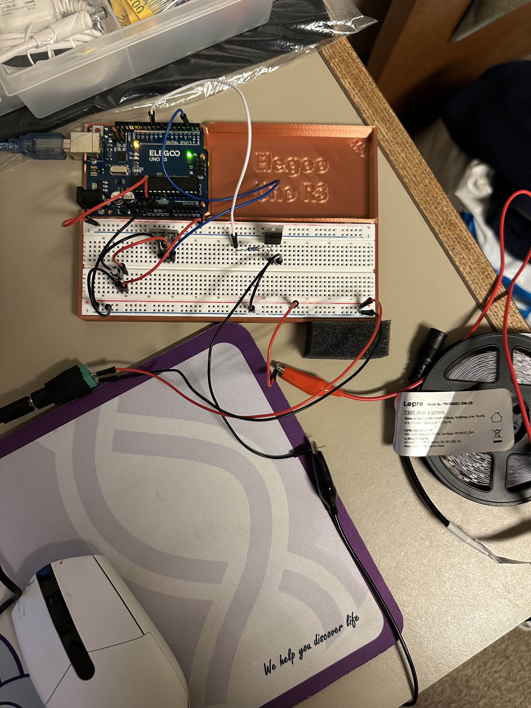
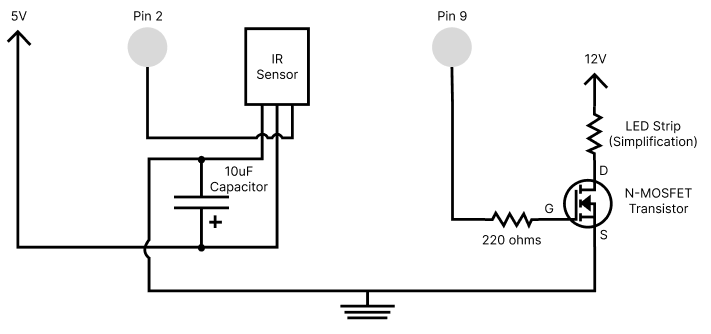
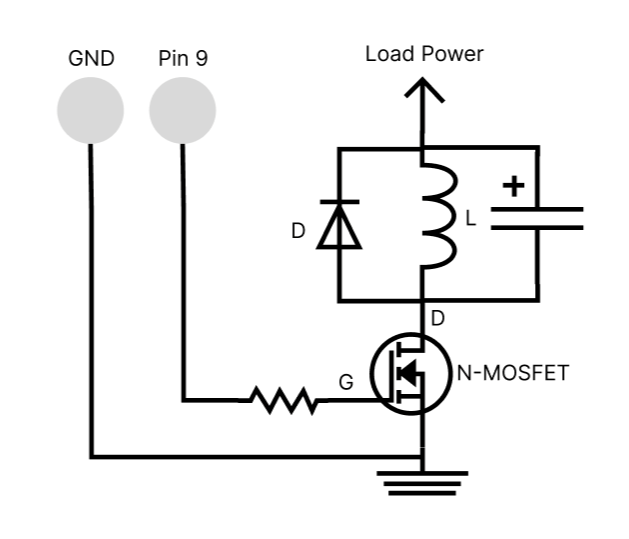
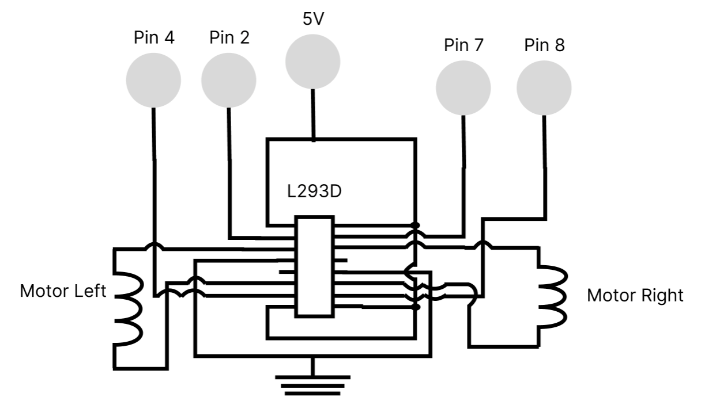

Overview
The circuit uses an IR Receiver module paired with an elegoo remote as an input while using the IRremote.hpp library to get the data (note: any compatible remote mentioned in the source works too).
An external power source is also used to power the 12V LED strip, which is safely switched on and off using an N-MOSFET transistor separating the high-current load from the arduino.
The code implements a simple ON/OFF toggle and a fading sequence as a bonus for the circuit.
Schematics and Breadboard Circuitry


The shown circuit (left) and schematic (right) displays an IR sensor module (elegoo remote used but not shown), a N-MOSFET transistor, an LED strip (Connected by gator clips)
and the 12V external power source alongside the arduino.
From the schematics seen from in-class slides, and what could be found online a resistor is preferred when using the gate pin to reduce the
current to a safer value for the arduino. From best practices found online and troubleshooting, a 10uF capacitor was used to help filter other noise components like the LED strip, which uses high-power and
disrupts the functionality of the low-power input sensor. This insures that power is consistently supplied to the IR sensor module to properly work.
Calculations:
A 220Ω resistor was used to ensure the current from the 5V pin is lowered to a safer level. Using Ohm's Law (V=IR), we can find that I = (5V / 220Ω) = 22.7mA of current.
Which is roughly close to the safe level that an arduino pin should run at, that being 20mA of current.
Transistor Maximum Current Justification
Using what I can find online, based on the power formula (P=VI), and the information provided on the back of the LED strip box give us what we need to justify this.
For a length of 50cm LED strip: P = 16W, 12V and I = 1.5A. I can use this to justify how much current I will be using. Given that
I am using the whole roll which is 5m = 500cm, the total P will go up to 160W instead.
With that, finding for current usage gives us I = (160W / 12V) = 13.33A. Using the data sheet provided for the N-MOSFET transistor, at room temp (25°C) the maximum current
it can handle is 37.2A of current. This is approximately 3 times the amount the LED strip is currently putting out, meaning that the transistor I am using
is operating at a safe current load when using the 5 meters worth of LED strip.
Arduino Code Snippet (.ino)
// Code uses examples from in class demonstrations, slides and external sources
// Schematic and code used from these external sources and or library examples:
// https://www.makerguides.com/ir-receiver-remote-arduino-tutorial/
// https://github.com/Arduino-IRremote/Arduino-IRremote?tab=readme-ov-file#compile-options--macros-for-this-library
#include "IRremote.hpp" // Includes the library for the Elegoo remote and IR receiver module
#define IR_RECEIVE_PIN 2 // Defines the pin that the IR receiver is connected to for input
const int gatePin = 9; // PWM digital pin connected to the N-MOSFET gate for output
uint16_t command; // Variable to store the IR command code (69 and 64) received from the remote
const int fadeDelay = 50; // Delays each fade step in sequence by 50 milliseconds
long lastFadeTime = 0; // Variable to store the time in milliseconds of the last fade step
int fadeValue = 0; // Variable to hold current brightness value (0-255) for analogWrite()
int fadeStep = 1; // Direction of fade sequence (1 = Fade up, -1 = Fade down)
bool isFading = false; // Variable to indicate if the fading sequence is active
bool gateStatus = false; // Variable to track the ON/OFF state of the LED strip (true = ON, false = OFF)
// Setup integrates parts from IR receiver remote tutorial
void setup() {
Serial.begin(9600); // Monitor input and output of the code for visualization and debugging
pinMode(gatePin, OUTPUT); // Sets digital pin 9 as an output for the gate pin
IrReceiver.begin(IR_RECEIVE_PIN, ENABLE_LED_FEEDBACK); // Initialize the IR receiver on the defined pin and enables LED feedback from sensor
}
// This section also includes and integrates parts of the IR receiver remote tutorial
// Codes received from remote used may be different, these following values are what are received from my elegoo remote
void loop() {
// Checks to see if an IR signal has been received and decoded
if (IrReceiver.decode()) {
command = IrReceiver.decodedIRData.command; // Stores interpreted code as command
Serial.println(command); // Prints the command value for visual debugging purposes on the Serial Monitor
// Determines what command to switch to based on code received using a switch statement
switch (command) {
// Command 69 is associated with the power button on the elegoo remote used
case 69:
gateStatus = !gateStatus; // Toggles the gate status when this command is called by inverting its status, letting it turn ON or OFF
isFading = false; // Stops any currently running fading sequence
// Checks to see if the gate status is true
if (gateStatus) {
analogWrite(gatePin, 255); // Turns on fully
Serial.println("LED strip on"); // Prints the status of the LED strip to the Serial Monitor
} else {
analogWrite(gatePin, 0); // Turns off completely
Serial.println("LED strip off"); // Prints the status of the LED strip to the Serial Monitor
}
break; // Exit the switch statement
// Command 64 is associated with the play/pause button on the elegoo remote used
case 64:
// Checks to see if the gate status is true
if (gateStatus) {
isFading = true; // Begins non-blocking fading sequence
fadeValue = 0; // Starts fade sequence from 0 brightness
fadeStep = 1; // Sets the fading direction to increasing
lastFadeTime = millis(); // Records the previous fade step time for the fading sequence
Serial.println("Fading LED strip"); // Prints the status of the LED strip to the Serial Monitor
} else {
Serial.println("Please turn on LED strip"); // Prints the status of the LED strip to the Serial Monitor
}
break; // Exit the switch statement
}
delay(100); // Delay of 100 milliseconds for deboucing after receiving a command
IrReceiver.resume();
}
// Non-blocking fading logic to run continously outside the switch case
// Checks to see if the fading is active and the time between the current and previous fade time
// has passed enough time to increment or decrement in fade value
// Method uses previous logic to avoid the for-loop blocking signal inputs when changing commands
if (isFading && (millis() - lastFadeTime > fadeDelay)) {
lastFadeTime = millis(); // Updates the last recorded time for the next fade step
fadeValue += fadeStep; // Increments or decrements fade value based on fade step value
// Checks to see if fade value reaches the maximum or minimum value and change its direction (0 and 255)
if (fadeValue >= 255) {
fadeStep = -1; // Changes the direction to start fading down
} else if (fadeValue <= 0) {
fadeStep = 1; // Changes the direction to start fading up
}
analogWrite(gatePin, fadeValue); // Apply the current fade value to the gate pin to be output
}
}
Circuit's Operation
Gif on left shows the LED strip being powered on and off with the remote by pressing the power button. The gif on the right shows
the remote clicking the play/pause button to start the fading sequence, initially fades from dim to bright.
Questions and Answers
1: This is the datasheet for the n-mosfet transistor: https://www.diodes.com/assets/Datasheets/DMT6009LCT.pdf.
What is the absolute maximum amount of current between pins 2 and 3?
From earlier, the maximum amount at room temp (25°C) between pin 2 and 3 is 37.2A of current.
2: Draw a schematic for a circuit with using at least your arduino, a DC motor, a flyback diode, and capacitors between power and ground.
Find parts with datasheets you could use for each of these schematic components.

Parts with datasheets: N-MOSFET (DMT6009LCT), Capacitor(013RLC), flyback diode (DO-41), DC motor (TOY0084). These are what I tried to dig up for datasheets available,
but should meet the requirements of operating this schematic.
3: Here is the datasheet for the L293D chip: https://www.ti.com/product/L293DLinks to an external site.. Draw a schematic using at least your arduino, this chip, and two motors.
Write (pseudo) code that shows how you would move the motors both forward, both back, then one forward one back, and one back then forward.

Some pseudo code to establish what the schematic can do
// Define pins for input, 2 for each motor
// Motor 1 Input controls (Pin 2 and Pin 4)
// Motor 2 Input controls (Pin 7 and Pin 8)
// Function for Motor 1
if direction is forward
write input pins input pins as high and low respectively to make it go forward
else if direction is backwards
write input pins as low and high respectively
else
write both pins as low
// End Function
// Function for Motor 2
Same code and conditions as function for motor 1
// End Function
// Call both functions with direction of choice in mind
// Example:
setMotorA(Forward)
setMotorB(Reverse)
delay(5000)
setMotorA(Stop)
setMotorB(Forward)
delay(5000)
// Other variations that meet the requirements to move motors bot forward, backwards or each independently
4: Did you use AI tools in completing this assignment? If yes, please provide details on how/when, as well as a brief reflection.
If you used an LLM, please 'share' your conversation and include it as part of your submission, or cite the prompt(s) you used and the output.
If no, you can either leave this question blank, or provide other information if you'd like.
AI was used in completing this assignment, as always it mainly helped with troubleshooting problems that were occuring or I did not expect.
For instance I asked it to help me figure out why my IR sensor was not registering input while the LED strip was currently fading, it provided me that
it could be that the high power of the LED strip was disrupting the lower power sensor used. So in order to ensure that it can receive inputs was to put
a capacitor that can help provide the power it needs to do its part. From this I was able to solve the problem that was rather a quick fix because of AI, however,
through some of the homework, particularly the question about datasheets associated with the components. I found it difficult to find components that I am using with a valid
data sheet from resources provided, and on top of the questions I asked AI to help me determine a compatible part with a datasheet seemed to complex for it to understand what I was
looking for. I ended up being stuck for a while because of it, which only really makes things more frustrating while going about the homework.